eyaltoledano/claude-task-master: vibe coding test
Installed from its README in a throwaway sandbox, then used by Claude Code (Claude Opus 5.5) to build two apps from requests written the way someone who cannot code would write them. Whenever the build stopped to ask a question or for approval, it got the same reply. A separate tester session, with no tool loaded, opened each app in a browser and ran the checks; we went through every screenshot. All results · The task · The tester's checks
Install: SETUP: done task-master-ai 0.43.1 CLI + MCP server (`npm install -g task-master-ai@0.43.1`; `cd ~/work && task-master init -y --rules claude`; `task-master models --set-main sonnet --claude-code && task-master models --set-research opus --claude-code && task-master models --set-fallback sonnet --claude-code`; `claude mcp add task-master-ai --scope user --env TASK_MASTER_TOOLS="core" -- npx -y task-master-ai`) (repo commit c0c98d367c55)
One sentence: an expense page
The request, word for word: 帮我做一个记账小网页：每次花钱记一笔（花了多少、买了什么），页面上能看到一共花了多少，关掉浏览器再打开，记录还在。
Ran: all 4 checks passed. Opens: double-click. Built in 2.5 minutes (limit 30); it stopped to ask 0 time(s); how it ended: finished. Usage at API prices: $0.82 (4.8 times the run with no tool). Packages: none (plain HTML, CSS and JavaScript).
| Check | Verdict | What the tester saw | Screenshot |
|---|---|---|---|
| opens | pass | file:// page shows: '记账小网页\n一共花了\n¥0.00\n记一笔\n记录\n暂无记录' | 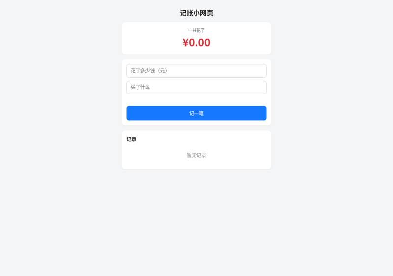 |
| records an expense | pass | records area: '午饭\n2026年10月26日 20:07\n¥25.00\n删除'; total ¥25.00 | 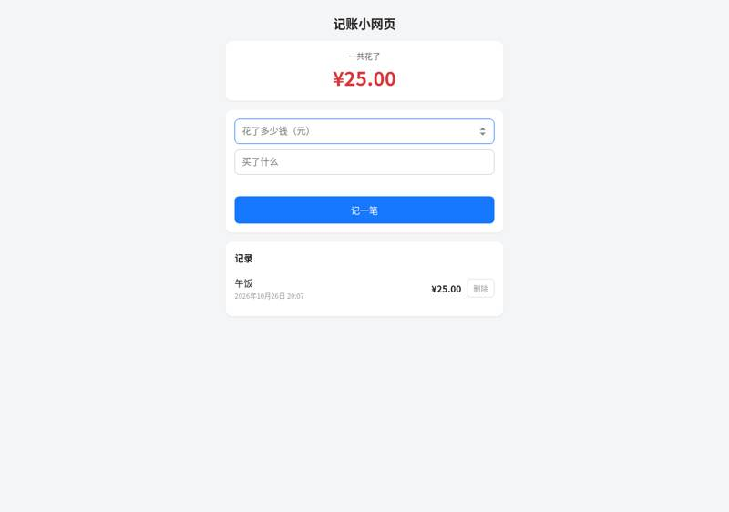 |
| total is right | pass | total shown: ¥41.50; records: '地铁\n2026年10月26日 20:07\n¥4.00\n删除\n咖啡\n2026年10月26日 20:07\n¥12.50\n删除\n午饭\n2026年10月26日 20:07\n¥25.00\n删除' | 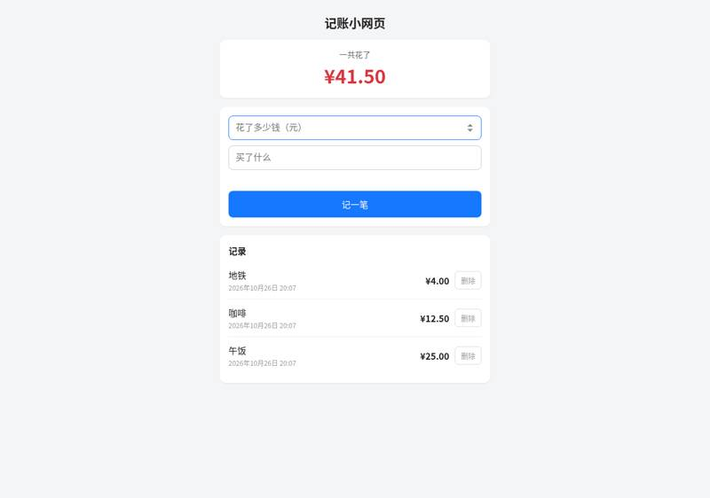 |
| still there after closing and reopening | pass | after reopen total: ¥41.50; records: '地铁\n2026年10月26日 20:07\n¥4.00\n删除\n咖啡\n2026年10月26日 20:07\n¥12.50\n删除\n午饭\n2026年10月26日 20:07\n¥25.00\n删除' | 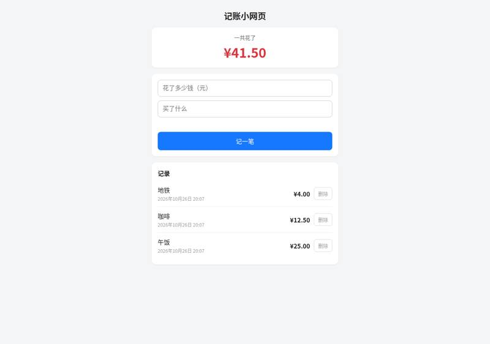 |


Where it stopped, and got the reply 「我不懂这些，你按你推荐的来，继续做。」
- It did not stop to ask.
One paragraph: a family ledger
The request, word for word: 做一个家庭记账本网页：能记收入和支出（金额、类别、日期、备注），能按月看收入、支出和结余，能看每个类别花了多少（最好有图），可以设每月预算、超了要提醒，还能把记录导出成 Excel 表格。数据存在我电脑上就行。
Ran: all 8 checks passed. Opens: double-click. Built in 31.9 minutes (limit 45); it stopped to ask 0 time(s); how it ended: finished. Usage at API prices: $5.35 (5.2 times the run with no tool). Packages: none (plain HTML, CSS and JavaScript).
| Check | Verdict | What the tester saw | Screenshot |
|---|---|---|---|
| opens | pass | Double-clicked index.html (file://) shows 家庭记账本 with month 2026年10月, tabs 记账/统计/预算/设置与导出, the 记一笔 form and summary cards at ¥0.00. | 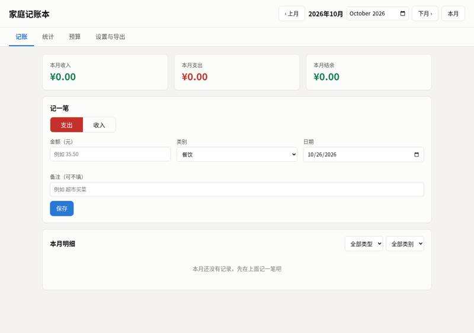 |
| records income and expenses | pass | 本月明细 table shows: 10月01日 收入 工资 +¥5,000.00 十月工资; 10月05日 支出 餐饮 -¥120.00 午饭; 10月08日 支出 交通 -¥30.00 地铁; 10月12日 支出 餐饮 -¥80.00 晚饭. The income category list (工资/奖金/理财收益/兼职/礼金/其他) appears when 收入 is chosen; 工资 was used. |  |
| month's income, spending and balance | pass | October 2026 cards: 本月收入 ¥5,000.00, 本月支出 ¥230.00, 本月结余 ¥4,770.00. | 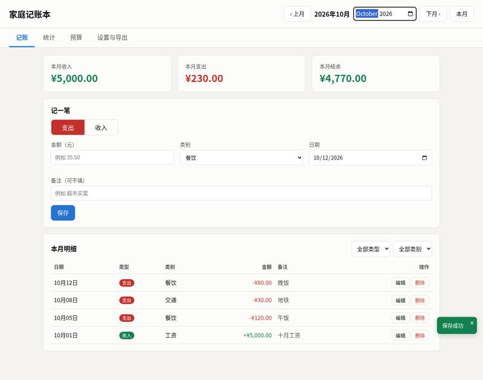 |
| spending by category | pass | 统计 tab, October: 支出分类 donut chart plus table 餐饮 ¥200.00 87.0%, 交通 ¥30.00 13.0% (合计 ¥230.00); 收入分类 工资 ¥5,000.00; bar chart of the last 6 months. | 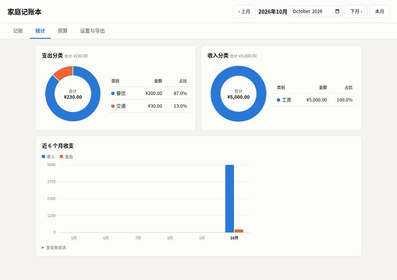 |
| switches between months | pass | Added 999 购物 on 2026-09-15. September 2026: 本月收入 ¥0.00, 本月支出 ¥999.00, 本月结余 -¥999.00, list shows 09月15日 支出 购物 -¥999.00. Back in October: ¥5,000.00 / ¥230.00 / ¥4,770.00. | 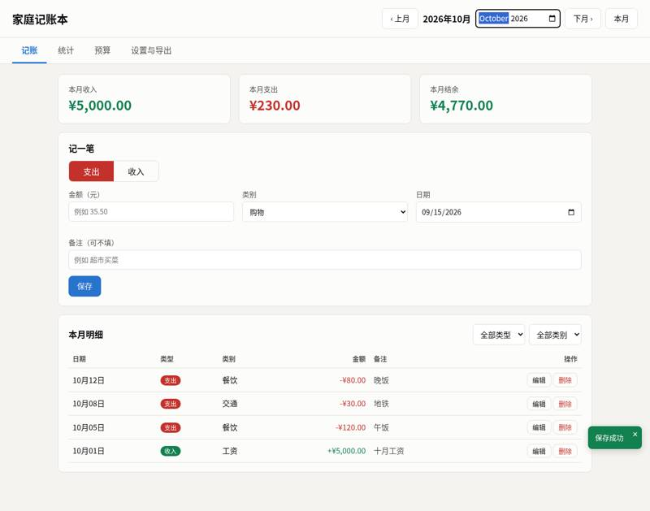 |
| warns over budget | pass | Set 每月总支出预算 to 200 on the 预算 tab (the budget applies to every month, not just October). A red banner appears at the top of every tab: '⛔ 2026年10月已超预算：总支出超出 ¥30.00'; the progress bar turns red with '已超支 ¥30.00, 已花 ¥230.00 / 预算 ¥200.00（115.0%）'. No browser dialog appeared. | 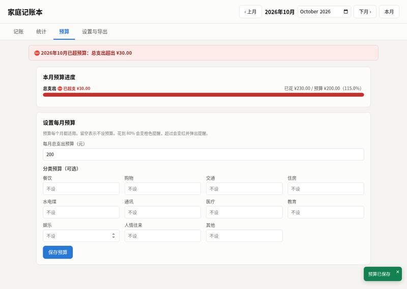 |
| exports a spreadsheet | pass | 设置与导出 → 导出全部记录 downloaded 家庭记账本-全部-2026-10-26.xlsx (a real .xlsx file). The 明细 sheet has rows 2026-09-15 支出 购物 999; 2026-10-01 收入 工资 5000 十月工资; 2026-10-05 支出 餐饮 120 午饭; 2026-10-08 支出 交通 30 地铁; 2026-10-12 支出 餐饮 80 晚饭. There are also a 月度汇总 sheet (2026-09 0/999/-999, 2026-10 5000/230/4770, 合计 5000/1229/3771) and a 分类汇总 sheet (购物 999, 餐饮 200, 交通 30, 工资 5000). | 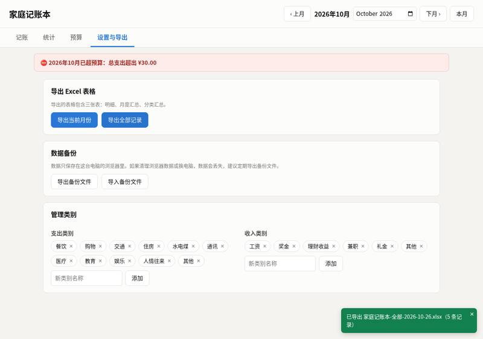 |
| still there after closing and reopening | pass | After restart, October shows ¥5,000.00 / ¥230.00 / ¥4,770.00 and the four October records; September still shows the 999 购物 record. | 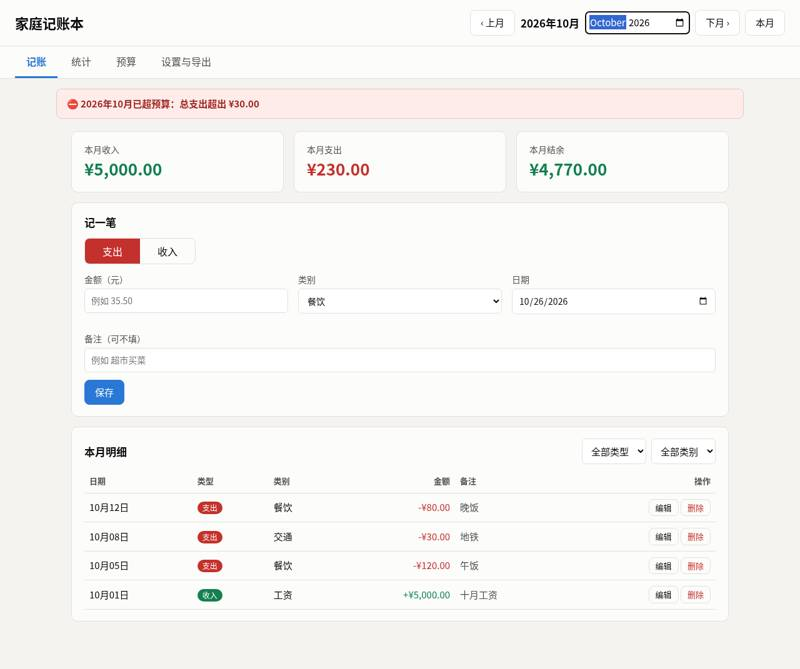 |


Where it stopped, and got the reply 「我不懂这些，你按你推荐的来，继续做。」
- It did not stop to ask.